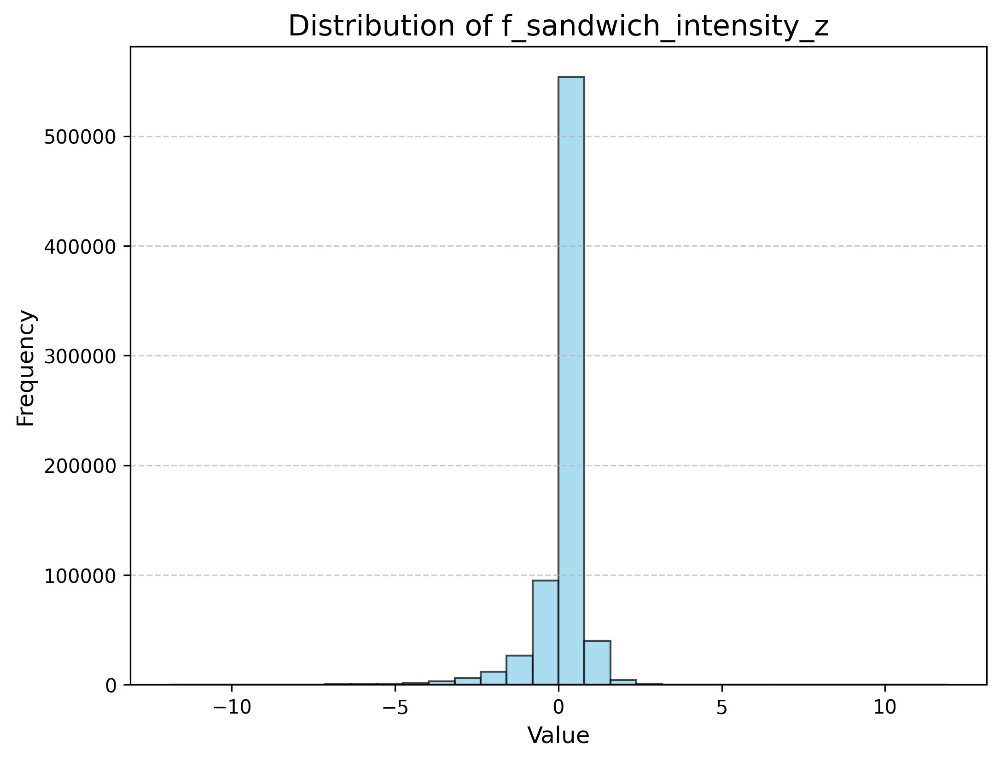
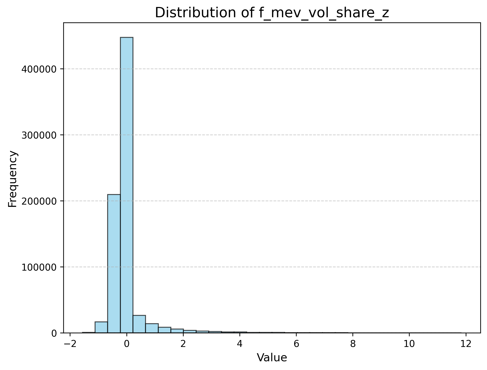
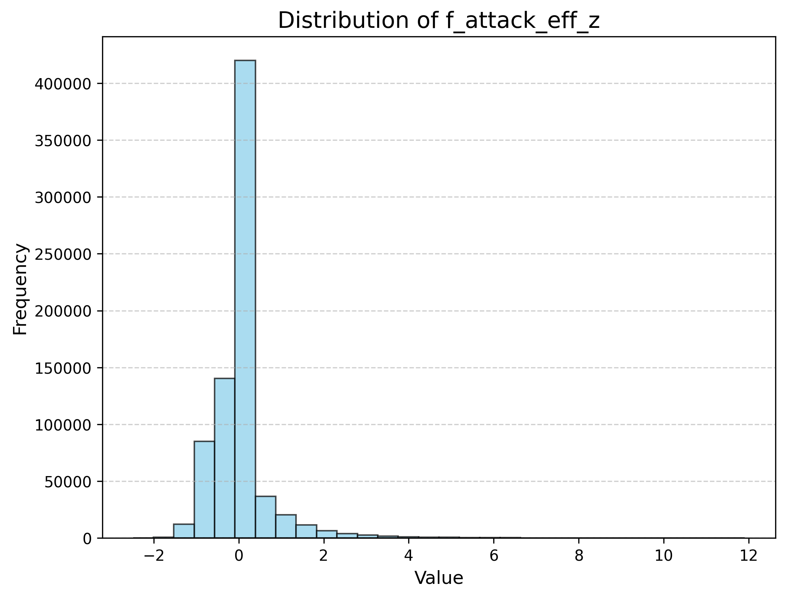

On-Chain MEV Signals for Cryptocurrency Timing链上 MEV 信号与加密货币择时
Do Ethereum MEV flows predict BTC volatility? A factor study on sandwich attacks, with spectral clustering and cost-sensitivity analysis.以太坊 MEV 流能否预测 BTC 波动？围绕三明治攻击的因子研究：谱聚类与成本敏感性分析。
- Built a multi-source dataset (2019–2026): BTC/USDT high-frequency OHLCV plus Ethereum sandwich-attack traces extracted from Dune Analytics.
- Designed 3 MEV-native features capturing on-chain adversarial flow: attack intensity, attacked volume share, and attack efficiency.
- MEV features carry strong standalone information (|IC| 0.10 – 0.27) and are close to orthogonal to classical price/volume factors — they describe a part of the market price data does not see.
- Used Jaccard-similarity spectral clustering to de-correlate the factor zoo; the strongest channel is volatility timing, not direction.
- Cost analysis is the punchline: the frictionless backtest reached +18,571% cumulative (~186×), 66.4% annualized, but the strategy breaks even at only ~0.23 bp of fees and turns sharply negative at 0.5 bp. The alpha is real but execution-bound.
- 构建多源数据集（2019–2026）：BTC/USDT 高频量价 + 来自 Dune Analytics 的以太坊三明治攻击轨迹。
- 设计 3 个 MEV 原生特征刻画链上对抗性流量：攻击强度、被攻击成交量占比、攻击效率。
- MEV 特征具有强独立信息量（|IC| 0.10 – 0.27），且与经典量价因子接近正交——它们描述的是价格数据看不到的那部分市场。
- 采用基于 Jaccard 相似的谱聚类对因子去相关；最稳健的通道是波动率择时，而非方向预测。
- 成本分析是核心结论：无摩擦回测累计 +18,571%（约 186 倍）、年化 66.4%，但在约 0.23 bp 费用水平即盈亏平衡，0.5 bp 时大幅转负——alpha 真实存在，但受限于执行。
1. Motivation1. 研究动机
MEV (Maximal Extractable Value) is the profit extracted by reordering, inserting or censoring transactions within a block. Sandwich attacks — buying before a victim's swap and selling right after — are its most visible form, and they are on-chain observable: every attack is a public sequence of swaps.
MEV（最大可提取价值）是通过在区块内重排、插入或审查交易而获得的利润。三明治攻击——在受害者交易前买入、之后卖出—— 是其最典型的形式，而且是链上可观测的：每次攻击都是一串公开的 swap 序列。
That makes MEV data an unusual signal source:
这让 MEV 数据成为不寻常的信号源：
- It measures adversarial, informed flow rather than aggregate volume.
- It behaves like a stress indicator: attacks cluster around liquidity fragmentation, high volatility and retail order-flow imbalance.
- It is structurally different from exchange OHLCV data — a candidate orthogonal alpha source, especially for volatility rather than direction.
- 它度量的是对抗性的、知情的流量，而非总量。
- 它近似一种压力指标：攻击聚集在流动性碎片化、高波动与散户订单流失衡的时段。
- 它与交易所 OHLCV 数据结构上不同——是潜在的正交 alpha 来源，尤其适合波动率而非方向。
The question this study asks: can on-chain MEV activity be turned into tradable timing signals for BTC, and what does execution cost do to them?
本研究的问题：链上 MEV 活动能否转化为可交易的 BTC 择时信号？执行成本对其影响有多大？
2. Data2. 数据
| Block | Frequency | Content | Source |
|---|---|---|---|
| Price / volume | High-frequency bars | BTC/USDT OHLCV | Centralized exchange data |
| On-chain MEV | Event-level | Sandwich attacks, victim/attacker amounts, fees, transaction traces | Dune Analytics |
| 数据块 | 频率 | 内容 | 来源 |
|---|---|---|---|
| 价格 / 成交量 | 高频 bar | BTC/USDT OHLCV | 中心化交易所数据 |
| 链上 MEV | 事件级 | 三明治攻击、受害者/攻击者金额、费用、交易轨迹 | Dune Analytics |
Coverage: 2019-01 – 2026-01 (2,584 days in the labeled dataset), with 745,326 aligned observations across the factor panel.
覆盖范围：2019-01 – 2026-01（标注数据集共 2,584 天），因子面板对齐后共 745,326 条观测。
3. MEV-native features3. MEV 原生特征
| Feature | Definition | Economic reading |
|---|---|---|
f_sandwich_intensity_z | Sandwiched transactions per unit time, standardized | Frequency of adversarial intervention |
f_mev_vol_share_z | Attacked volume / total volume | How much flow is being exploited |
f_attack_eff_z | Victim volume / attacker volume | Profitability of attacks = market vulnerability |
| 特征 | 定义 | 经济含义 |
|---|---|---|
f_sandwich_intensity_z | 单位时间被三明治夹击的交易数（标准化） | 对抗性干预的频率 |
f_mev_vol_share_z | 被攻击成交量 / 总成交量 | 流量被榨取的程度 |
f_attack_eff_z | 受害者量 / 攻击者量 | 攻击的盈利能力 = 市场的脆弱程度 |
Plus 26+ classical technical factors (momentum, mean-reversion, volume/liquidity,
volatility, intraday structure, Alpha101-style) implemented on top of vectorbt: ROC,
MA deviation, MACD, TSI, Bollinger width/%B, CCI, distance-to-high/low, KDJ, OBV, VWAP
deviation, CMF, volume surge, MFI, ATR, Garman-Klass volatility, realized vol, high-low spread,
skew/kurtosis, bar structure, price-volume correlation, time-series volume rank and more.
此外还有 26+ 个经典技术因子（动量、均值回复、成交量/流动性、波动率、日内结构、Alpha101 风格），
基于 vectorbt 实现：ROC、MA 偏离、MACD、TSI、布林带宽度/%B、CCI、距高低点距离、KDJ、OBV、
VWAP 偏离、CMF、成交量激增、MFI、ATR、Garman-Klass 波动率、已实现波动率、高低价差、偏度/峰度、
bar 结构、价量相关、成交量时序排名等。
4. Methodology4. 方法
Dune extraction ──► MEV features ─┐
├─► IC screen (Spearman) ──► correlation pruning
OHLCV ──► 26+ tech factors ───────┘ │
▼
Jaccard-similarity spectral clustering
│
┌────────────────────────┴───────────────────────┐
▼ ▼
direction prediction volatility (|return|) prediction
└────────────────────────┬───────────────────────┘
▼
signal backtests (vectorbt)
Dune 提取 ──► MEV 特征 ──┐
├─► IC 筛选（Spearman）──► 相关性剪枝
OHLCV ──► 26+ 技术因子 ──┘ │
▼
基于 Jaccard 相似的谱聚类
│
┌─────────────────────┴─────────────────────┐
▼ ▼
方向预测（收益率符号） 波动率预测（|收益率|）
└─────────────────────┬─────────────────────┘
▼
信号回测（vectorbt）
- IC screening. Rank-IC (Spearman) of every factor against forward returns; MEV features are also tested against |returns| to capture the volatility channel.
- De-correlation. Factors are pruned on pairwise correlation, then clustered by spectral clustering on a Jaccard similarity matrix, so each cluster carries one theme (momentum, liquidity, volatility, MEV, …).
- Group tests. Cluster representatives are tested on direction and absolute-return targets, producing 60 quantile / IC charts.
- Signal construction & cost sensitivity. Cluster signals are combined and backtested, sweeping fee assumptions to locate the break-even.
- IC 筛选。 对每个因子计算对未来收益的 Rank IC（Spearman）；MEV 特征同时对 |收益| 检验以捕捉波动率通道。
- 去相关。 先按两两相关性剪枝，再在 Jaccard 相似矩阵上做谱聚类，使每个聚类对应一个主题（动量、流动性、波动率、MEV……）。
- 分组测试。 以聚类代表因子分别在方向与绝对收益目标上测试，产出 60 张分位 / IC 图。
- 信号构建与成本敏感性。 合成各聚类信号并进行回测，扫描费率假设以定位盈亏平衡点。
5. Results5. 结果
MEV features vs. classical factors (standalone IC)MEV 特征 vs 经典因子（独立 IC）
| Factor | Target | IC (Spearman) |
|---|---|---|
f_sandwich_intensity_z | forward return | +0.104 |
f_mev_vol_share_z | forward return | −0.273 |
f_attack_eff_z | forward return | −0.186 |
| most technical factors (ROC / CCI / MA-dev, …) | forward return | ≈ −0.006 … +0.006 |
| 因子 | 目标 | IC（Spearman） |
|---|---|---|
f_sandwich_intensity_z | 未来收益 | +0.104 |
f_mev_vol_share_z | 未来收益 | −0.273 |
f_attack_eff_z | 未来收益 | −0.186 |
| 多数技术因子（ROC / CCI / MA 偏离等） | 未来收益 | ≈ −0.006 … +0.006 |
Magnitude. MEV features are an order of magnitude more informative than typical technical factors on this sample — with the caveat that these are measured on the full sample, so they are screening evidence, not out-of-sample performance.
量级。 MEV 特征在本样本中比典型技术因子高出一个数量级的信息量——需要说明的是，这些数值在全样本上测得，属于筛选证据而非样本外表现。
Orthogonality. Correlation with price/volume factors is low, so MEV features survive pruning and clustering as a distinct theme rather than a proxy for volatility.
正交性。 与量价因子的相关性低，因此 MEV 特征在去相关与聚类中作为独立主题保留下来，而不是波动率的代理变量。



Direction vs. volatility方向 vs 波动率
- Direction: the signal reached 52.46% validation accuracy (ROC-AUC 0.5369, rank IC ≈ 0.062) — statistically present but economically thin.
- Volatility (|return|): MEV clusters rank among the strongest groups (magnitude rank IC ≈ 0.46); sandwich activity spikes precede elevated volatility and liquidity stress.
- 方向： 信号验证准确率 52.46%（ROC-AUC 0.5369，Rank IC ≈ 0.062）——统计上存在，但经济意义有限。
- 波动率（|收益|）： MEV 聚类是表现最强的组之一（幅度 Rank IC ≈ 0.46）；三明治活动激增往往先于波动率抬升与流动性紧张。
This is the economically sensible reading: MEV measures fragility, not direction.
这符合经济直觉：MEV 度量的是脆弱性，而非方向。
Cost sensitivity — the real result成本敏感性——真正的结果
| Fee (round-trip) | Cumulative return | Annualized | Sharpe | Max drawdown |
|---|---|---|---|---|
| 0 bp (frictionless) | +18,571% | 66.4% | 25.9 | −56.4% |
| 0.1 bp | +1,909% | 33.9% | 13.3 | −65.1% |
| 0.23 bp (break-even) | +1.3% | 0.1% | 0.05 | −89.1% |
| 0.5 bp | −99.7% | −43.8% | −17.1 | −99.7% |
| 往返费率 | 累计收益 | 年化 | 夏普 | 最大回撤 |
|---|---|---|---|---|
| 0 bp（无摩擦） | +18,571% | 66.4% | 25.9 | −56.4% |
| 0.1 bp | +1,909% | 33.9% | 13.3 | −65.1% |
| 0.23 bp（盈亏平衡） | +1.3% | 0.1% | 0.05 | −89.1% |
| 0.5 bp | −99.7% | −43.8% | −17.1 | −99.7% |
The practical finding: the signal can be strong and still not survive retail cost structures. This strategy class is viable only with top-tier execution — colocated infrastructure, maker rebates, fee tiering. The research therefore ships an execution layer as well: a Rust MEV bot for pending-transaction monitoring and Uniswap-V2 pricing math, used to observe and prototype sandwich execution.
实践结论：信号即使很强，也未必能承受零售级成本结构。这类策略只有在顶级执行环境下才可能成立—— 共址部署、maker 返佣、费率分级。因此本研究同时实现了执行层：用于监控 pending 交易与 Uniswap-V2 定价的 Rust MEV bot，以便观察与原型化三明治执行。
6. Limitations6. 局限
- IC values for MEV features are measured on the full sample; the honest next step is walk-forward evaluation.
- BTC/USDT is the only traded asset; cross-asset robustness is untested.
- A break-even fee of ~0.23 bp means the strategy is effectively unreachable for most participants — the main practical conclusion.
- MEV features rely on Dune-indexed data; availability and latency are not guaranteed at live trading horizons.
- MEV 特征的 IC 在全样本上测得；更严谨的下一步是滚动窗口（walk-forward）评估。
- 仅交易 BTC/USDT，跨资产稳健性未验证。
- 约 0.23 bp 的盈亏平衡费率意味着该策略对多数参与者实际不可达——这是最重要的实践结论。
- MEV 特征依赖 Dune 索引数据；在实盘时间尺度上的可用性与延迟没有保证。
This work is for research and educational purposes only and is not investment advice.
本研究仅用于研究与教育目的，不构成任何投资建议。
© 2026 Venti · Research portfolio研究作品集